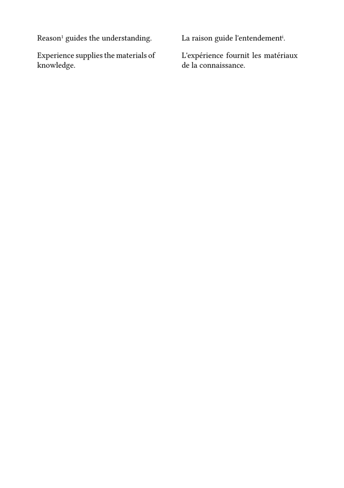

Work in progress.
This orientation page and the related guides are currently being drafted and reviewed. Please feel free to edit, correct, or improve them.
Critical apparatus guides: ← Guide 4 — Using multiple apparatus layers · Orientation · Glossary · Guide 5 of 6 · Next: Guide 6 — Managing structured critical data with Lua →
Placing an original text beside its translation does not by itself create a
parallel edition.
Two columns may appear parallel while gradually losing their correspondence. A short paragraph in the original may face a much longer translation; a page break may separate passages intended to remain opposite each other.
The first question is therefore not:
How can two columns be created?
but:
Which units of the original and translation must remain in correspondence?
This guide begins by recording those units explicitly. It then shows how the same source can be rendered side by side or as a stacked proof.
The progression is:
| Stage | Editorial problem | Result |
|---|---|---|
| 1 | Decide what must remain aligned | Correspondence units are defined in the source |
| 2 | Render each pair clearly | Two paragraph cells with an explicit gutter |
| 3 | Distinguish original and translation | Separate language, style, and width settings |
| 4 | Add scholarly annotation | Independent note layers remain attached to the correct side |
| 5 | Test other outputs and difficult pages | Stacked proof, stable identifiers, and page-boundary tests |
| 6 | Extend the model to line-based editions | Shared line numbers and advanced apparatus levels |
Core principle. The source should record editorial correspondence. The page layout should render that correspondence without becoming its only possible representation.
Contents
- 1 1. Choose the unit of correspondence
- 2 2. Record correspondence before choosing a layout
- 3 3. Build the first paired layout
- 4 4. Compile a minimal paired-paragraph example
- 5 5. Set the language and style of each side
- 6 6. Adjust the relative widths
- 7 7. Give different editorial units explicit names
- 8 8. Attach notes to the appropriate side
- 9 9. Compile an annotated parallel-text example
- 10 10. Switch between publication and proof layouts
- 11 11. Assign stable identifiers to corresponding units
- 12 12. Test unequal blocks and page boundaries
- 13 13. Choose the layout mechanism from the editorial requirement
- 14 14. Reuse the setup in an environment file
- 15 15. Advanced extension: number corresponding lines
- 16 16. Advanced extension: distinguish annotation levels
- 17 17. Test the complete design systematically
- 18 18. Understand the limits and next steps
- 19 19. Command summary
- 20 20. Choose the next guide
- 21 Online resources
- 22 Related pages
1. Choose the unit of correspondence
Parallel editions can synchronize different kinds of units.
| Model | Unit placed in correspondence | Typical use | Main consequence |
|---|---|---|---|
| Free parallel composition | pages or independent columns | translation intended for continuous reading | the two texts may advance at different rates |
| Paragraph synchronization | corresponding paragraphs or editorial blocks | prose, philosophy, history | each pair begins at the same vertical position |
| Segment synchronization | sentences or short passages | close philological comparison | alignment is more precise, but markup is finer |
| Line synchronization | verses or editorial lines | poetry, drama, ancient texts | every line becomes a reference unit |
These are not progressively better versions of one another. Each answers a different editorial need.
For the first part of this guide, paragraph or short-segment synchronization is the most practical starting point.
Editorial principle. Choose the alignment unit from the structure and purpose of the edition. Do not let a convenient page mechanism decide the segmentation accidentally.
2. Record correspondence before choosing a layout
The source should express one corresponding pair:
\parallelparagraph
{original-language paragraph}
{translated paragraph}
The command records an editorial relation. It does not commit the source to a single layout.
The same pair may later be rendered as:
- two adjacent blocks;
- a stacked proof;
- facing pages;
- another project-specific mechanism.
Avoid writing a complete tabulation directly in every textual component. That would mix the editorial content with one particular page design.
3. Build the first paired layout
A simple implementation uses two paragraph cells separated by an explicit gutter:
\definetabulate [paralleltext] [|p(.43\textwidth)|w(1.5em)|p(.43\textwidth)|]
The middle column contains no text. It provides a fixed separation between the two sides.
Define:
\define[2]\parallelparagraph
{\startparalleltext
\NC #1
\NC
\NC #2
\NC\NR
\stopparalleltext}
Use:
\parallelparagraph
{Reason guides the understanding.}
{La raison guide l'entendement.}
Layout principle. The empty middle cell creates an explicit gutter. This keeps the separation stable in every row and makes the two textual cells easier to reason about.
4. Compile a minimal paired-paragraph example
-
\mainlanguage[en] \setuppapersize[A5] \setupbodyfont [libertinus,10pt] \setuplayout [width=middle, height=middle, backspace=16mm, topspace=14mm, header=0mm, footer=8mm] \definetabulate [paralleltext] [|p(.43\textwidth)|w(1.5em)|p(.43\textwidth)|] \define[2]\parallelparagraph {\startparalleltext \NC #1 \NC \NC #2 \NC\NR \stopparalleltext} \starttext \parallelparagraph {Reason guides the understanding.} {La raison guide l'entendement.} \parallelparagraph {Experience supplies the materials of knowledge.} {L'expérience fournit les matériaux de la connaissance.} \stoptext
This MWE checks:
- the width of the two textual cells;
- the consistency of the empty gutter;
- the common starting position of each pair;
- the fit of the complete tabulation within the text width.
5. Set the language and style of each side
The two texts may require different hyphenation and typographical settings.
Define wrappers:
\define[1]\originaltext
{\language[en]#1}
\define[1]\translatedtext
{\language[fr]#1}
Use them inside the paired command:
\define[2]\parallelparagraph
{\startparalleltext
\NC \originaltext{#1}
\NC
\NC \translatedtext{#2}
\NC\NR
\stopparalleltext}
Styling can also be kept separate:
\define[1]\originalstyle
{{\it #1}}
\define[1]\translationstyle
{#1}
\define[1]\originaltext
{\language[en]\originalstyle{#1}}
\define[1]\translatedtext
{\language[fr]\translationstyle{#1}}
For a Greek original, the wrapper may instead select Greek:
\define[1]\originaltext
{\language[agr]#1}
The exact language tag and font coverage should be tested in the real project environment.
6. Adjust the relative widths
A translation may require more room than the original.
For example:
\definetabulate [paralleltext] [|p(.39\textwidth)|w(1.5em)|p(.47\textwidth)|]
| Design | Original | Gutter | Translation |
|---|---|---|---|
| Equal emphasis | 43% | 1.5 em | 43% |
| Wider translation | 39% | 1.5 em | 47% |
| Wider original | 47% | 1.5 em | 39% |
Equal widths are not automatically neutral. Column width changes lineation, reading rhythm, and the visual importance of each text.
7. Give different editorial units explicit names
Paragraphs, short segments, and lines may initially share the same renderer:
\define[2]\parallelpair
{\startparalleltext
\NC \originaltext{#1}
\NC
\NC \translatedtext{#2}
\NC\NR
\stopparalleltext}
\define[2]\parallelparagraph
{\parallelpair{#1}{#2}}
\define[2]\parallelsentence
{\parallelpair{#1}{#2}}
\define[2]\parallelline
{\parallelpair{#1}{#2}}
Even when the implementation is identical, the command names preserve the editorial distinction. A later version can give lines numbers or a different layout without changing every source occurrence.
8. Attach notes to the appropriate side
The original may carry a textual apparatus:
\definenote
[textualapparatus]
\setupnote
[textualapparatus]
[location=page]
\define[2]\variant
{#1\textualapparatus{{\it #1}] #2}}
The translation may carry its own notes:
\definenote
[translationnotes]
\setupnote
[translationnotes]
[location=page]
\define[1]\translationnote
{\translationnotes{#1}}
Use both inside one pair:
\parallelparagraph
{\variant
{Reason}
{Judgment B D}
guides the understanding.}
{La raison guide
l'entendement\translationnote
{The term is translated here as “entendement”.}.}
The horizontal structure contains the two texts. The page-level note systems form a separate critical zone.
| Area | Contents |
|---|---|
| Original cell | edited original and textual apparatus calls |
| Gutter | no textual material |
| Translation cell | translated text and translation-note calls |
| Page-level critical zone | collected apparatus entries and translation notes |
Testing requirement. Note calls made inside paragraph cells must be compiled with the ConTeXt release and page design intended for publication. A successful short example does not prove that long notes or page boundaries will behave satisfactorily.
9. Compile an annotated parallel-text example
-
\mainlanguage[en] \setuppapersize[A5] \setupbodyfont [libertinus,10pt] \setuplayout [width=middle, height=middle, backspace=16mm, topspace=14mm, header=0mm, footer=8mm] \definetabulate [paralleltext] [|p(.43\textwidth)|w(1.5em)|p(.43\textwidth)|] \define[1]\originaltext {\language[en]#1} \define[1]\translatedtext {\language[fr]#1} \define[2]\parallelparagraph {\startparalleltext \NC \originaltext{#1} \NC \NC \translatedtext{#2} \NC\NR \stopparalleltext} \definenote [textualapparatus] \setupnote [textualapparatus] [location=page] \setupnotation [textualapparatus] [way=bypage, numberconversion=numbers, style=\tfx] \define[2]\variant {#1\textualapparatus{{\it #1}] #2}} \define[2]\reading {#1 {\it #2}} \definenote [translationnotes] \setupnote [translationnotes] [location=page] \setupnotation [translationnotes] [way=bypage, numberconversion=romannumerals, style=\tfx] \define[1]\translationnote {\translationnotes{#1}} \starttext \parallelparagraph {\variant {Reason} {\reading{Judgment}{B D}} guides the understanding.} {La raison guide l'entendement\translationnote {The word “entendement” is used here rather than “intellect”.}.} \parallelparagraph {Experience supplies the materials of knowledge.} {L'expérience fournit les matériaux de la connaissance.} \stoptext
-

This example tests:
- note calls inside both textual cells;
- two independent note series;
- distinct marker systems;
- preservation of the explicit gutter;
- alignment of consecutive pairs.
10. Switch between publication and proof layouts
A stacked proof can reveal missing or mismatched translation units more clearly than a side-by-side page.
Define the side-by-side renderer:
\define[2]\parallelparagraphsidebyside
{\startparalleltext
\NC \originaltext{#1}
\NC
\NC \translatedtext{#2}
\NC\NR
\stopparalleltext}
Define the stacked renderer:
\define[2]\parallelparagraphstacked
{\startframedtext
[width=\textwidth,
frame=off,
offset=none]
{\bf Original}\par
\originaltext{#1}
\blank[small]
{\bf Translation}\par
\translatedtext{#2}
\stopframedtext
\blank[small]}
Select one renderer:
\let\parallelparagraph \parallelparagraphsidebyside
or:
\let\parallelparagraph \parallelparagraphstacked
Editorial workflow. Proof and publication layouts may display the same correspondence units differently. The correspondence belongs to the source; the visible arrangement belongs to the chosen output.
11. Assign stable identifiers to corresponding units
A long edition should be able to refer to a pair independently of page number.
Store an identifier and optional printed label:
\define[2]\defineparallelunit
{\setvariables
[parallelunit:#1]
[label={#2}]}
\define[1]\parallelunitlabel
{\getvariable{parallelunit:#1}{label}}
Declare:
\defineparallelunit
{chapter1-paragraph3}
{1.3}
A proof command may display the label:
\define[3]\identifiedparallelparagraph
{\startparalleltext
\NC {\bf \parallelunitlabel{#1}}\quad
\originaltext{#2}
\NC
\NC {\bf \parallelunitlabel{#1}}\quad
\translatedtext{#3}
\NC\NR
\stopparalleltext}
The stable identifier remains unchanged even if printed numbering is revised.
12. Test unequal blocks and page boundaries
A paired layout should not be judged from short, balanced examples only.
Test:
- a short original facing a long translation;
- a long original facing a short translation;
- several consecutive pairs;
- annotations in both cells;
- a pair near the bottom of the page.
A tabulated pair preserves the common starting position of the two cells, but it should not be assumed to be indivisible. The longer cell may continue after the shorter one has ended.
This may be acceptable for short or medium synchronized units. It is less suitable when a complete original and translation block must remain together.
Page-boundary difficulty. When a pair is too large for the remaining space, the first remedy should be an editorially defensible subdivision into smaller correspondence units—not arbitrary fragmentation introduced only to fill the page.
13. Choose the layout mechanism from the editorial requirement
The paired tabulation is only one possible mechanism.
| Requirement | Useful starting point | Main limitation |
|---|---|---|
| Translation readable independently | free columns or facing pages | weak paragraph synchronization |
| Paragraphs should begin together | paired tabulated blocks | long rows require page-break testing |
| Short segments must correspond closely | paired segment commands | finer editorial markup |
| Every verse or line must correspond | explicit line units | one source unit per line |
| Long texts must flow independently | streams or a custom synchronized system | more complex synchronization strategy |
| Same source must produce proof and publication layouts | semantic pairing commands with replaceable renderers | requires disciplined source structure |
ConTeXt can render correspondence recorded in the source. It cannot decide automatically which passages are equivalent translations.
14. Reuse the setup in an environment file
A larger project should keep the layout and note-series definitions outside the textual components.
Create:
env-parallel-critical-text.mkxl
It may contain:
- the tabulation definition;
- language and style wrappers;
- side-by-side and stacked renderers;
- note-series declarations;
- textual apparatus and translation-note interfaces.
Load it with:
\environment env-parallel-critical-text
Practical consequence. The environment defines how paired units and their annotations are displayed. The components record the corresponding original and translated passages.
15. Advanced extension: number corresponding lines
A line-based edition may use stable editorial line numbers rather than numbers derived from physical line breaks.
One numbered row contains:
| Cell | Contents |
|---|---|
| 1 | shared editorial line number |
| 2 | original text |
| 3 | corresponding translation |
Define:
\newdimen\paralleltextwidth
\paralleltextwidth=\dimexpr
(\textwidth-2.5em)/2
\relax
\definetabulate
[numberedparalleltext]
[|w(1.5em)|p(\paralleltextwidth)|p(\paralleltextwidth)|]
\define[3]\numberedparallelline
{\NC \hfill{\tfxx #1}
\NC {\language[agr]#2}
\NC {\language[la]#3}
\NC\NR}
Use:
\numberedparallelline
{1}
{Τὰ ἰσόνομα λεγόμενα}
{Aequivoca dicuntur}
Stable reference. Explicit editorial line numbers remain stable when fonts, widths, physical line breaks, or page layouts change.
Unequal correspondence may use an empty continuation number or suffixes such as
6a and 6b. The chosen convention should be stated in
the editorial principles of the edition.
16. Advanced extension: distinguish annotation levels
A scholarly Greek–Latin page may require several types of annotation:
| Layer | Function |
|---|---|
| Textual apparatus | variants, omissions, substitutions |
| Lexical or morphological notes | dictionary lemmas and grammatical analysis |
| Bibliographical notes | editions, parallels, commentaries, secondary literature |
The interfaces should make those functions visible:
\define[2]\textual
{#1\textualnote{#1] #2}}
\define[2]\lemmatize
{#1\lemmanote{#1] #2}}
\define[2]\bibliographic
{#1\bibnote{#1] #2}}
Scholarly distinction. An apparatus lemma identifies a passage in the edited text. A lexical lemma identifies the dictionary form of a word. The two uses of lemma must not be confused.
Advanced implementation warning. Notes and line notes called inside tabulation cells may be scoped locally or collected differently from ordinary page notes. Any solution based on postponing notes, line-note levels, or custom boxes must be compiled and validated independently before it is presented as a general recipe.
For that reason, the line-based Greek–Latin page should be treated as an advanced project-specific extension rather than as the minimal continuation of the paragraph-pair method.
17. Test the complete design systematically
Compile representative cases containing:
| Test case | What to inspect |
|---|---|
| Short balanced pairs | basic alignment and gutter |
| Short original, long translation | wrapping and page breaking |
| Long original, short translation | blank space and continuation |
| Notes in the original | textual apparatus placement |
| Notes in the translation | translation-note placement |
| Notes in both cells | marker distinction and collection |
| Pair near a page boundary | continuation and page balance |
| Stacked proof | preservation of source correspondence |
| Numbered line pairs | stability of editorial references |
| Several annotation levels | order, readability, and page capacity |
Check:
- whether corresponding units begin together;
- whether either cell overflows;
- whether the gutter remains stable;
- whether the note systems remain distinct;
- whether page filling remains acceptable;
- whether proof and publication renderers use the same source successfully.
18. Understand the limits and next steps
The paired-block method is well suited to demonstrations, proofing, and editions built from reasonably short synchronized units.
It does not automatically provide:
- independent long-text flow with synchronization points;
- automatic facing-page synchronization;
- automatic detection of missing translation units;
- validation of duplicate identifiers;
- sorting and filtering of all critical records;
- interchange with external editorial systems.
For registration, sorting, filtering, and validation, see Managing structured critical data with Lua.
For TEI XML sources, see Building critical editions from TEI XML.
What this guide has established. Parallel composition begins with editorially defined units of correspondence. Semantic commands can render those units side by side or in a stacked proof while preserving independent annotation layers. The same model can later be extended to stable numbered lines and more complex scholarly apparatuses.
19. Command summary
| Command | Purpose |
|---|---|
\parallelparagraph
|
Record and render one corresponding paragraph pair |
\parallelsentence
|
Record one corresponding sentence or short segment |
\parallelline
|
Record one corresponding line |
\originaltext
|
Apply original-language settings |
\translatedtext
|
Apply translation-language settings |
\parallelparagraphsidebyside
|
Render a pair in two cells separated by a gutter |
\parallelparagraphstacked
|
Render the same pair vertically for proofing |
\defineparallelunit
|
Store a stable unit identifier and printed label |
\variant
|
Attach textual evidence to the original |
\translationnote
|
Attach a translation note to the translation |
\numberedparallelline
|
Render one numbered original–translation line pair |
The semantic commands are defined by this guide. They are not predefined ConTeXt commands.
20. Choose the next guide
| Next task | Continue with |
|---|---|
| Build one simple apparatus | Guide 1 |
| Format the apparatus | Guide 2 |
| Declare witnesses and textual operations | Guide 3 |
| Use several independent apparatus layers | Guide 4 |
| Register, sort, filter, and validate critical records | Guide 6 |
| Process a TEI XML edition | Building critical editions from TEI XML |
Online resources
- Tabulate — constructing aligned side-by-side blocks;
- Columns — column mechanisms and their limitations;
- Command/definenote — defining independent note series;
- Command/setupnote — placing and configuring note blocks;
- Command/setupnotation — formatting markers and entries;
- Command/definelinenote — defining line-note series;
- Line numbering — numbering textual lines;
- Modes — switching between proof and publication layouts;
- Command/environment — loading shared layout definitions.
Related pages
- Building a critical apparatus with ConTeXt
- Glossary of critical edition terms
- Building a simple critical apparatus
- Formatting a critical apparatus
- Managing witnesses and textual variants
- Using multiple apparatus layers
- Managing structured critical data with Lua
- Building critical editions from TEI XML
Critical apparatus guides: ← Guide 4 — Using multiple apparatus layers · Orientation · Glossary · Guide 5 of 6 · Next: Guide 6 — Managing structured critical data with Lua →